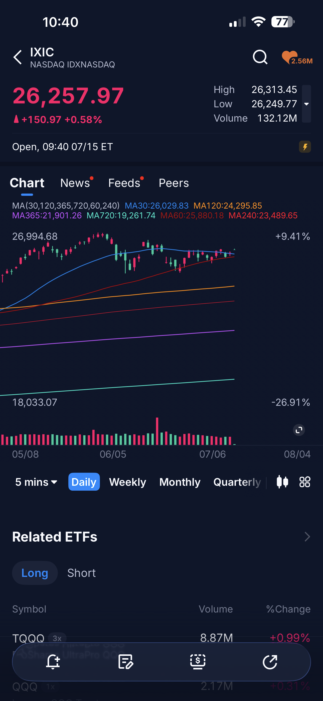
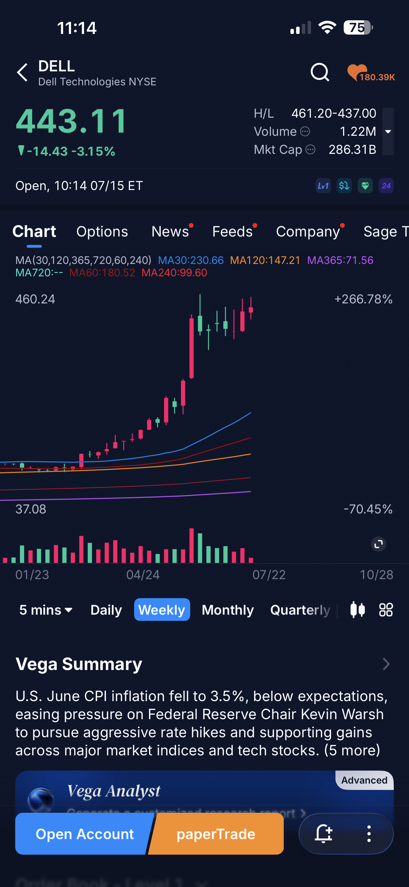
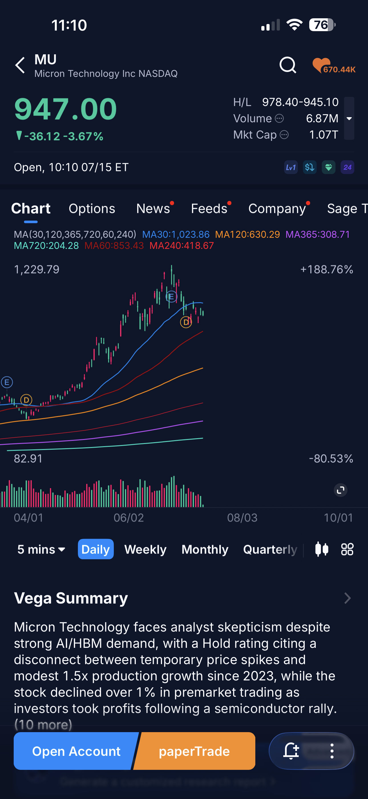
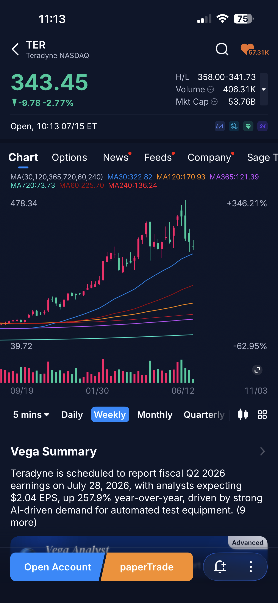
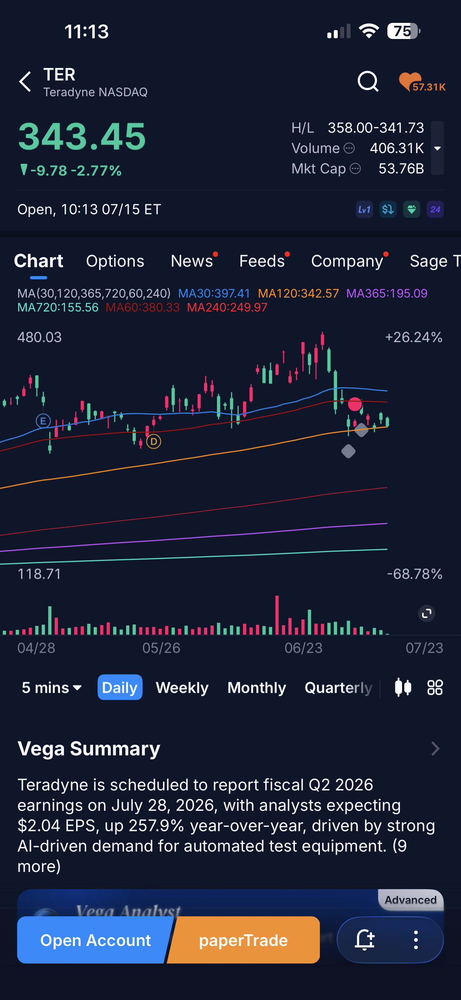
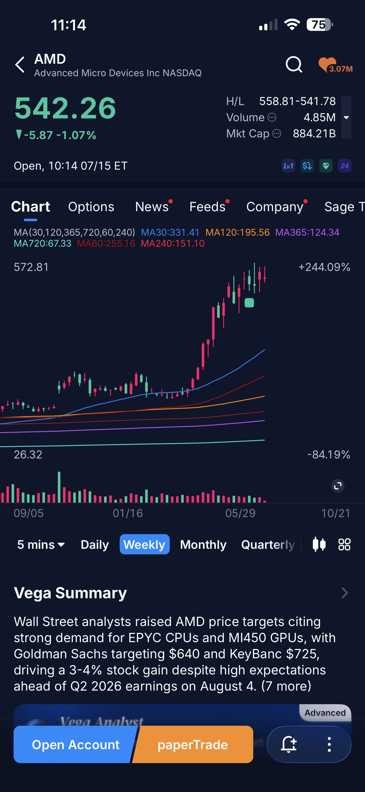
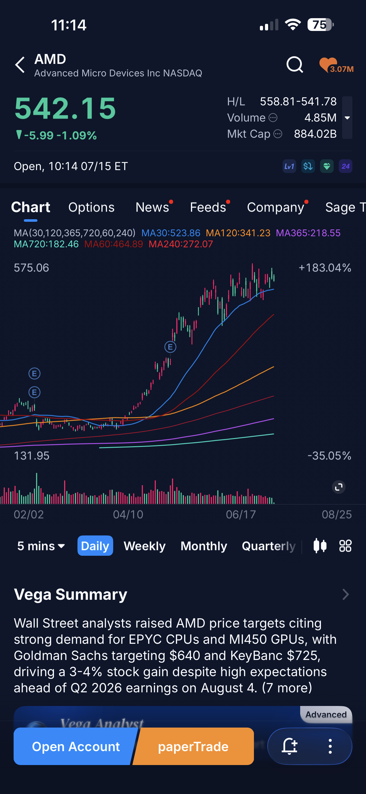

같은 날, 같은 시장을 서로 다른 각도로 본 두 영상을 타임스탬프별로 정리했다.
영상 A는 한국 시장의 미시구조(마진콜·ADR 괴리·공매도)에서, 영상 B는
글로벌 산업 사이클(민스키 모델·주도주 로테이션)에서 답을 찾는다.
차트 10장은 관련 섹터 비교 지점에 첨부했고, 스크립트의 핵심 주장은 웹 조사로 교차 검증했다.
영상 A — 수급·청산 분석 채널 (20:08)영상 B — 산업 사이클·로테이션 분석 채널 (27:39)차트 10장 + 웹 조사 10건
SNAPSHOT 오늘 시장 스냅샷 — 7/15 미국장 초반
종목
가격
등락
시총
한 줄 메모
나스닥 종합 (IXIC)
26,257.97
+0.58%
—
CPI 호재로 지수는 상승 유지
마이크론 (MU)
$946.94
−3.68%
$1.07T
시총 1조 달러대. 전일 랠리 차익 실현
샌디스크 (SNDK)
$1,625.83
−7.51%
$240.8B
주봉 +806% 급등 뒤 가장 깊은 되돌림
AMD
$542.26
−1.07%
$884.2B
조정폭 최소 — 영상 B가 주목한 그 특징
테라다인 (TER)
$343.45
−2.77%
$53.8B
7/28 실적. EPS +257.9% YoY 예상
델 (DELL)
$443.11
−3.15%
$286.3B
서버 수요 수혜주도 오늘은 쉼
캡처 기준: 7/15 10:10~11:14 ET (한국시간 밤 11시대), 장 초반 시세. 등락 색상은 국내 관례(빨강=상승, 파랑=하락).
읽는 법: 6월 CPI 3.5%(예상 하회)로 지수는 오르는데 메모리·AI 하드웨어는 일제히 쉬는 날 — 전일 밤 ADR발 폭등(+27%)의 되돌림이 진행 중이라는 영상 A의 경고와 정확히 맞는 그림.
영상 A 수급이 만든 폭락 — 마진콜 120만 계좌와 ADR 괴리의 구조
한 수급·청산 분석 채널, 7/15 업로드, 총 20:08. 결론 먼저 — "이번 급등락은 실적이 아니라 구조(레버리지·파생 수급)가 만든 것. ADR 폭등에 따라붙지 말고, 사려면 현금으로 본주 분할 매수."
0:00–3:10
① 인트로 — "미친 시장", 그리고 계좌 공개를 멈춘 이유
나스닥 100: 6월부터 진폭을 좁히며 수렴 횡보 — 조만간 위든 아래든 방향을 정할 자리.
코스피: 같은 구간에서 횡보를 못 하고 흘러내림. 한 달 −28%, 하루 만에 +7% 반등, 사이드카·서킷브레이커가 연일 발동.
계좌 공개 중단의 이유: 공개 계좌는 여전히 +2억 이상 수익이나 전체 평가액이 고점 대비 4~5억 감소. 대규모 청산 국면에 수익 인증은 돈 자랑으로 비칠 수 있어 자제 — 시장 정상화 후 재개 예정.

나스닥 종합 일봉 — 26,258pt +0.58%. 6월 이후 진폭이 좁아지는 수렴 구간이 그대로 보인다. 30일선(26,030) 위에서 공방 중.
📌 비교 차트 없음: 여기 옆에 코스피 일봉이 나란히 붙어야 "미국은 수렴, 한국은 붕괴" 대비가 완성된다 → 하단 추가 차트 요청 #4
3:10–7:22
② 금감원이 밝힌 120만 계좌 — 마진콜의 작동법
글로벌 IB 주간 리포트 인용: 예탁금 잔액이 2020년 코로나 광풍의 약 2배, 신용융자 잔고도 약 2배. 최근엔 예탁금은 줄어드는데 신용융자 비율은 상승 — 전형적 위험 신호.
금감원 집계(7/13까지): 마진콜 통보 받은 개인 계좌 120만 개+. 이 중 32만~36만 개는 강제청산으로 원금 통째 소멸, 일부는 증권사 빚까지 남음.
규모감: 34만 명 = 광진구(33만)·동대문구(35만) 인구. 120만 = 수원시급.
메커니즘: 국내 주식 담보유지비율 약 140%에서 마진콜 발동. 1:1 레버리지(5천 넣고 5천 빌려 1억 매수)로 대형 반도체주를 샀다면 주가 −30% = 내 돈 기준 −60%. 변동성 큰 종목이면 −70~80%까지도.
7:22–8:57
③ 레버리지의 함정과 마르는 실탄 — 예탁금 32조 증발
삼성전자 본주 고점 대비 −25% → 2배 레버리지 ETF는 −50% 반토막. 하이닉스 쪽은 더 심함.
음의 복리: 1억이 −50% 되면 5천. 여기서 +50% 올라도 7,500 — 원금 회복엔 +100%가 필요. 오르내리며 흘러내리는 장에서 레버리지는 이 음의 복리를 반복해서 맞는다.
예탁금 6월 초 140조 → 7월 초 107조 (한 달 만에 32~33조 증발). 은행 대출한도도 상반기에 소진 — 하반기 빚투 여력은 제도적으로 막혀 있음.
화자 스탠스 — 청산당한 분들께 미안하지만 이건 시장이 건전해질 요소. 글로벌 IB도 "하반기 주가는 펀더멘털을 따라갈 가능성"으로 분석. 강제 청산 쏟아질 때가 "팔 사람 다 팔았다"는 바닥 신호인 경우가 많다. 단 자발적 디레버리징이 아니므로 건강한 신호라 단정은 못 함.
8:57–10:58
④ 그날 밤 미국 — ADR은 왜 27% 폭등했나
7/14(월) 밤, SK하이닉스 ADR +27% 폭등. 한국에선 청산으로 털리고, 같은 주식이 미국에선 폭등하는 대조적 그림.
재료: 영국계 IB가 목표가를 $330(약 2배 상향) 제시 + ADR 기초 옵션·레버리지 ETF 약 10개 신규 상장 → 기관 매수세 집중.
결과: ADR이 본주보다 약 50% 비쌈. 상장 때 괴리율 3% → 며칠 만에 50%.
화자 경고 — "ADR이 27% 올랐으니 본주도 무조건 따라간다"는 접근은 매우 위험. 이 급등은 옵션+레버리지 파생 수급 때문이라는 게 거의 확실한 분석이라 언제든 되돌릴 수 있다. 이미 보유자에겐 위안이 되겠지만 펀더멘털 재평가로 단정할 새 정보는 아직 없다.
📌 주인공 차트 없음: 이 챕터의 주인공인 SK하이닉스 본주 / ADR 차트가 없다 → 추가 차트 요청 #1·#2. 스냅샷의 MU·SNDK 급락(−3.7%·−7.5%)이 "파생 수급발 랠리의 되돌림" 경고를 오늘 그대로 증명 중.
10:58–14:03
⑤ 같은 회사인데 50% 괴리 — 차익거래를 막는 3대 장벽
원래 괴리는 "싼 본주 매수 → 비싼 ADR로 전환 매도" 차익거래로 자연히 좁혀져야 한다. 그런데 지금은 그 통로가 막혀 있다:
① 물리적 시차 — 본주↔ADR 전환 신청 자체가 신주 국내 상장일인 7/29 이후에나 가능. 지금은 두 가격을 잇는 통로가 아예 끊긴 상태.
② 제도적 비대칭 — ADR→본주는 한도 없이 가능하지만, 괴리 축소에 필요한 방향인 본주→ADR은 한도에 묶여 있음.
③ 기울어진 운동장 — 전환은 사실상 기관 전용. 개인은 MTS/HTS에서 전자적으로 차단돼 있고 절차도 복잡. 7월 말 이후에도 개인은 계속 소외되는 구조.
그 틈에 헤지펀드 페어트레이드: 미국에서 ADR 매수 + 서울에서 본주 공매도. 실제 대차잔고·공매도가 2주 만에 30%+ 폭증 — 본주는 눌리고 ADR만 뛰는 구조가 완성됨.
글로벌 IB 진단: 7/13의 −9% 급락엔 나쁜 실적 신호도 이익 전망 하향도 없었다 — 순전히 구조적 요인. 그날 레버리지 ETF발 강제청산 물량이 기관 순매도의 62%.
14:11–17:54
⑥ 룰도 모르고 도박판에 들어간 개미 — 강세 vs 약세 논거
개미는 "하이닉스 성장에 베팅"으로 들어갔는데 막상 판은 파생 수급 도박장이었고, 룰도 모른 채 판돈을 들고 앉아 있었다. 손실은 투자자의 판단 착오가 아니라, 이런 판이 짜이도록 방치한 금융당국 책임이라는 게 화자의 시각.
강세 논거 (펀더멘털 이상 무)
약세 논거 (수급 구조 열악)
· 하이닉스 1Q 영업이익률 72% — 79% 전망 카더라도 (엔비디아 초과 수준) · HBM 세계 1위 · 마이크론·샌디스크 등 메모리 전반 슈퍼사이클 진입 · 6월 CPI 예상 −0.3%p 하회 → 금리 인상 확률 크게 하락
· 외국인 올해 한국 주식 1,100억 달러 순매도 (사상 최대) · 마진콜 120만 — 개인 실탄 고갈 · 예탁금 32조 증발 + 하반기 대출 절벽 · 펀더멘털이 좋아도 마켓메이커가 들었다 놨다 하는 포지션 장세
화자 결론 — 펀더멘털이 훼손되지 않고 장기 유지되면 주가는 결국 수렴한다(장기투자 관점). 숏감마 리밸런싱은 양방향 — 내릴 때 더 내리지만 오를 때도 더 오른다. 지금 하이닉스류를 사고 싶다면: 레버리지 금지, 빚투 금지, 본주를 현금으로, 상당히 내려왔을 때 분할 매수, 장기 보유.
17:54–20:08
⑦ 진짜 바닥의 조건 — 3가지 시그널 + 1
① 괴리율 20% 미만 — ADR-본주 괴리가 이 밑으로 좁혀져야 외국인이 본주 공매도를 멈추고 숏커버링이 들어오며 정상 시장으로 복귀.
② 하루 반대매매 1,000억 원 미만 — 레버리지 빚투가 줄고 "팔 사람 다 팔았다"는 신호.
③ 외국인 순매수 최소 1~2주 지속 — 하루 반짝이 아니라 개인 청산 물량을 외국인이 받아주는 그림.
+ 글로벌 IB의 한 가지: 개인 강제청산이 끝까지 진행돼 "살 개미가 없어질 때" — 개인의 항복이 곧 바닥. 화자 해석: "그들은 아직 바닥이 멀었다고 보는 듯".
마무리 — 다른 주식도 있고, 지금이 아니어도 된다. 투자 안 하면 죽는 병에 걸린 게 아니다. 바닥 맞히기라는 답 없는 문제 대신 다른 기회를 찾는 것도 방법. 투자는 한 시즌이 아니라 평생 — 이번 손실을 "나에게 맞는 투자법" 피드백 기회로.
영상 B 주도주 지속이냐 교체냐 — 민스키 모델로 본 AI 사이클과 후보군 6개
한 산업 사이클·로테이션 분석 채널, 7/15 업로드, 총 27:39. 결론 먼저 — "지금은 수요 붕괴가 아니라 너무 빨리 달린 속도·기대치의 조정 구간. 다음 주도주는 아무도 모르지만, 아무리 뒤져봐도 이익 최대는 여전히 메모리."
0:00–2:21
① 간밤 미국 브리핑 — 폭락한 IBM이 반도체를 살렸다
메모리 반도체 변동성 극심. 6월 CPI 양호로 시장 분위기 개선된 것도 있지만, 반등의 1등 공신은 −25% 폭락한 IBM.
IBM은 1968년 이후 최악의 하루 — 어닝 미스. 그런데 CEO 발언이 핵심: "6월 말 몇 주 사이 기업 고객들이 가격이 오르기 전에 물량을 확보하려고 서버·스토리지·메모리로 예산을 옮겼다. 그 예산이 IT·소프트웨어 지출을 빨아들이고 있다."
→ IBM엔 악재지만 반도체엔 수요가 실재한다는 증거. "최후 저지선에서 사람 여럿 살린 셈".
하이닉스 ADR 장중 내내 상승해 +27% 마감, 마이크론 +5%대, 반도체 대부분 강세. 서버 시장 강세 + 사이버보안 강세(IBM "고객이 보안에도 집중").

델 (DELL) 주봉 — 서버 수혜 대표주. 4월 이후 수직 상승(+266% 구간)으로 "예산이 서버로 이동"을 주가가 선반영. 오늘은 −3.15% 쉼.

마이크론 (MU) 일봉 — 전일 +5%대 반등 후 오늘 −3.68% 되돌림. 6월 고점 $1,229 대비 조정 중, 30일선($1,024) 아래.
📌 IBM 일봉이 있으면 "−25% 크래시가 반도체 랠리의 방아쇠"라는 이 문단이 완성된다 → 추가 차트 요청 #8
근 1년 글로벌 주도주 = 메모리 반도체, 그것도 한국 기업이 2개. 이익은 지금도 가장 앞서가는데 "내년 피크아웃 아니냐"는 차익실현이 도미노처럼 무너진 게 최근 그림.
핵심 질문: 메모리가 다시 주도주로 복귀하나, 아니면 손바뀜을 거쳐 다음 주도주로 넘어가나. 변동성 구간의 손바뀜은 ①재상승 랠리의 준비 ②스마트머니가 다음 주도주로 이동하는 근거 — 둘 다 가능.
메모리 보유 여부와 무관하게, 삼전·하이닉스가 안정돼야 코스피·코스닥 전체가 제 갈 길을 간다 — 모든 한국 투자자의 문제.
4:14–9:52
③ 민스키 모델 점검 — AI 사이클 3대 체크리스트
민스키: "안정이 길어질수록 그 안정 자체가 불안정의 씨앗." 버블의 단계 — 새 패러다임 → 호황·낙관 → 비이성적 과열("이번엔 다르다") → 흔들림(기대-현실 괴리) → 신뢰 붕괴·레버리지 청산 → 현실 기반 재평가.
체크
판정
근거
① 이익이 실제로 나오는가
통과 ○
유포리아 단계 특징은 "이익 없이 스토리로만 상승". 지금은 반도체 분기 연속 사상 최대 순이익, 삼성전자 사상 최대 영업이익 + 증가 사이클. 오히려 이익이 너무 많은 게 피크아웃 우려의 방아쇠.
② 빚으로 버티고 있는가 (헤지→투기→폰지 금융 이행)
세모 △
AI 투자 주체(알파벳·아마존·메타·MS)는 FCF 탄탄. 단 외부 조달 증가, 26년 잉여현금흐름 마이너스 전망은 위험 신호. ROI 논리에 균열이 오면 메모리만이 아니라 시장 전체 문제(미국 시장 절반이 AI 밸류체인). 감시 변수: 10Y 금리·유가·칩플레이션(6월 CPI 세부에서 컴퓨터 +17%).
③ 시장은 뭘 걱정하나
세모 △
수요 소멸 걱정이 아니라 "이익 추정치가 너무 앞서갔나(27년 피크?)". 주가는 절대 실적이 아닌 하반기 가격 상승률의 기울기에 달림. 디램/낸드를 구별해 보는 시각 등 잣대가 계속 높아지는 중 — 살아남는 기업이 갈릴 수도, 논리가 버티면 재랠리 근거가 될 수도.
화자 스탠스 — 반도체 산업 자체는 민스키 곡선을 이미 한 번 통과한 성숙 산업(수요·공급 조절 노하우 보유). 지금 꺾임은 "많이 오른 주가의 조정"이지 산업이 붕괴 곡선으로 내려가는 게 아니다. 단 AI는 인류가 한 번도 안 가본 길 — 곡선 위 위치는 누구도 단정 못 함. 산업은 제 갈 길을 가는데 투자자(레버리지 ETF)가 앞서 달렸을 가능성이 크다.
9:52–12:37
④ 반등의 재료, 그리고 차기 주도주의 조건
반등 재료: 물가 우려 완화 + 엔비디아 중국 수출 재개 + 커스텀칩 마켓셰어 확대 + 금융주 호실적.
영국계 IB 하이닉스 ADR 목표가 $330, 미국계 IB 삼성전자 조정 시 매수 의견 — 애널리스트 대부분이 바이 레이팅.
질문: 메모리에서 빠져나간 자본이 돌아올까, 다른 주도주를 찾을까. 화자 판단: 지금은 수요 붕괴 국면이 아니라 속도·기대치 조정 구간.
차기 주도주의 조건 (고금리 지속 전제): ① 이익 추정치 상승 중 ② 공급 병목 + 가격 주도권 ③ AI 투자가 늘수록 매출·이익 비례 확대 ④ 마켓셰어 확대 ⑤ 작은 뉴스·수급에 과도하게 흔들리지 않을 것. 단, 주도주가 바뀌어도 AI 밸류체인 = 반도체 섹터 내부에서의 이동일 가능성이 크다.
12:37–15:21
⑤ 후보 ①② — 커스텀칩·네트워킹 / 패키징·장비
후보① 커스텀 AI칩 + 네트워킹 — 브로드컴(AVGO)·마벨(MRVL)·미디어텍
구글 TPU 외부 판매 증가, 메타 자체 가속기, OpenAI·애플도 자체칩 추진. 설계 가능한 회사는 현재 3곳뿐.
마진이 아주 큰 비즈니스는 아니지만 마켓셰어가 다방면으로 커지는 특징 + 네트워킹·스위치(연결 효율) 사업 동반 보유.
AI 확장 국면이 경쟁 국면으로 가면 수요가 더 몰리고 → 그 공급 부족은 파운드리로 이어지는 사슬.
후보② 패키징·장비 — 병목은 웨이퍼가 아니라 패키징
병목이 웨이퍼 생산 → 첨단 패키징(CoWoS)·HBM 적층 검사·수율 관리로 이동. TSMC 대만 첨단 패키징 공장 2개 추가, 램리서치는 올해 첨단 패키징 매출 증가 전망.
장비 업체의 구조적 장점: 파운드리처럼 수십조 직접 투자 없이 TSMC·삼성·인텔·메모리 3사의 투자를 동시에 수취.
단점: 사이클이 있어 장기 보유보단 스윙 타이밍 매매 영역. 산업 이해가 필요한 난이도 있는 섹터 — 주도주가 되기엔 모멘텀 기간이 짧을 가능성.

테라다인 (TER) 주봉 — 반도체 검사장비(ATE) 대표. HBM 적층 검사 수요 그 자리. 1년간 +346% 상승 후 고점권 조정 — "장비는 스윙 영역"이라는 화자 말대로 등락이 크다.

테라다인 (TER) 일봉 — 6월 고점 $480 대비 −28%, 30일선 아래. 7/28 실적 발표: EPS $2.04 예상(+257.9% YoY, AI 검사장비 수요) — 장비 사이클 검증 이벤트.
📌 AVGO·MRVL·LRCX 차트가 있으면 후보①②의 조정폭을 메모리(MU·SNDK)와 직접 비교 가능 → 추가 차트 요청 #6·#9·#11
15:21–17:27
⑥ 후보 ③④ — 파운드리(TSMC) / EDA·IP
후보③ TSMC — AI칩 산업의 운영체제
순수 파운드리 점유율 73%. 엔비디아가 이기든 브로드컴이 이기든, 구글·메타가 칩을 만들수록 제조는 전부 TSMC로 — 특정 칩 회사가 아니라 산업의 OS.
이번 2분기 실적 발표가 반도체 시장 전체 기대치를 한 번 더 올릴 수 있는 관건. 체크포인트: 27년 공급 전망, CoWoS 증설 속도, 가이던스.
단점: 스테디셀러 — 너무 안정적으로 천천히 오르는 주식이라 주도주 교체의 주인공이 되기엔 업사이드 포텐셜 제한적.
파생 수혜: TSMC 라인이 꽉 차서 증설해도 부족 → 삼성·인텔 파운드리가 본업+알파를 얻는 모멘텀 (수율만 잘 나오면).
후보④ EDA·IP — 시놉시스(SNPS)·케이던스(CDNS)
하이퍼스케일러가 칩을 설계할수록 설계 프로젝트 증가 — 최종 승자를 맞출 필요가 없는 곳간형 비즈니스. 단 주도주로 보기엔 폭발력 약함.
17:27–19:52
⑦ 후보 ⑤ — 근본 칩: AMD·엔비디아·인텔
AMD: 차트를 돌리다 보면 "반도체 조정이 왔는데 얼마 떨어지지도 않았네" 싶은 게 AMD. 필라델피아 지수 약세 구간에도 조정폭이 유난히 얕았음 → 본격 랠리가 다시 오면 시세를 주도할지 모를 주목 대상. EPYC CPU 수요 + 헬리오스 서버 통짜 판매(엔비디아 AI 팩토리 모델 추종). 메모리 공급이 병목이라 SW 효율화로 대응 중.
엔비디아: 중국 매출 길이 열림 — 규모가 커지면 업사이드 크지만, 어닝에서 오래 제외됐던 변수라 안정적 플러스로 보긴 어려움. 시총 1위의 무게(등락 모두 느림) + 메모리 가격 고공행진의 최대 구매 고객이라는 비용 부담. 하이닉스 HBM의 독점적 수요처.
인텔: 턴어라운드 기대 후보. 내부 스토리 괜찮고(우주용 칩 등 이전과 다른 모습) 미국이 가장 필요로 하는 제조 담당이라 국가적 지원 — 단 실적 증명 단계가 남음. 커스텀칩 시장 확대 시 파운드리 플러스알파 수혜(삼성도 동일).

AMD 주봉 — 5월 말부터 수직 상승(+244% 구간), 최고가 $573 부근에서 고점 유지. 메모리가 −20~30% 조정받는 동안 AMD는 사실상 횡보 — "조정폭 최소" 주장이 차트로 확인된다.

AMD 일봉 — 30일선($524) 위 안착, 오늘도 −1.07%로 스냅샷 6종목 중 가장 얕은 조정. 월가 목표가 $640~725 제시, 8/4 실적 발표.
웨이퍼를 잘라 칩을 만드는 기존 방식과 달리 웨이퍼 한 장을 통째로 AI 프로세서로 사용. 트랜지스터 4조 개, AI 코어 90만 개가 한 장에. 제조는 TSMC.
왜 중요한가: AI의 중심이 학습 → 추론 → 실시간 에이전트 추론으로 이동 중 = 속도가 관건 (코딩·전화·로봇이 사람의 말 속도로 응답해야 함). 자사 주장 기준 GPU 대비 추론 최대 15배(자체 비교라 검증 필요).
계약: OpenAI에 28년까지 750MW 규모 추론 용량 공급 + AWS와 하이브리드 추론(트레이니엄이 입력 처리, 세레브라스가 답변 생성) 협의.
리스크: IPO 후 거품 걷히며 주가 흘러내리는 중, 고객 편중(2~3곳이 70%+), 엔비디아 쿠다 생태계 장벽 — 범용 대체는 현실적으로 어렵고 특수 영역부터 상용화될 방향.
화자 프레임 — "아무리 만들어도 부족해, 뭔가 새로운 게 필요해"에서 나오는 게 양자컴퓨터고, 그 전 단계가 세레브라스 같은 컴퓨팅 구조 자체를 바꾸는 차세대 반도체. 미래에 굉장히 큰 기업이 돼 있을 수도 있지만 그건 알 수 없는 영역 — 지금은 "반도체는 파도 파도 끝이 없구나(마켓셰어 총량이 계속 커진다)"의 증거로 읽는 것.
22:59–27:39
⑨ 결론 — "그래서 주도주가 뭔데?" + 코스톨라니의 달걀
정답: 아무도 알 수 없다. 유튜버는 예측하는 사람이 아니고, 오늘 언급한 어떤 기업도 매수·매도 추천이 아님 (시청자 각자의 계좌 사정·투자 기간·위험 성향을 알 수 없으므로).
다만 다 검증해 보면 — 실제 이익이 가장 큰 건 아직도 메모리가 맞다. 큰 자본 입장에서 "비중이 너무 커져서 더 못 올리겠으니 한 번 폭락시켜 리셋하고 저가에 다시 산다"는 극단적 상상도 해볼 수 있는 자리.
한국 시장은 구조적으로 취약했고 레버리지가 몰려 살았다 — 앞을 알 수 없는 변동성 장세가 계속될 예정. 단기 트레이더(선물·옵션)에겐 좋은 장, 개인·초보에겐 기분 상하고 정신 피폐해지고 돈 잃는 장. 오늘 거래대금 상위를 봤더니 여전히 레버리지뿐.
자문 2가지: 민스키 곡선에서 AI 산업의 위치는 어디인가 / 나의 투자 심리는 어디에 있는가 — 이 둘은 다를 수 있다(주가가 심리를 앞서거나 심리가 주가를 앞선다).
코스톨라니의 달걀: 고점으로 갈 때 소심파가 부화뇌동파에게 주식을 넘기고, 저점으로 갈 때 부화뇌동파가 소심파에게 넘긴다 — 결국 소심파가 번다. 그 조건은 정보력·순발력·테크닉이 아니라 돈 · 생각 · 인내 + 약간의 운. 조절 가능한 건 돈·생각·인내 — 그중 인내가 가장 쉽다(참는 것). 초보일수록 남들보다 느리게 움직이는 게 낫다.
종합 두 시각 교차 분석 — 참고 의견 (판단은 본문 다 읽고 직접)
영상 A의 렌즈 — 한국 시장 미시구조
같은 사건(ADR +27%)을 "파생 수급이 만든 왜곡 — 따라붙지 마라"로 읽는다. 전환 통로 단절 + 공매도 페어트레이드가 괴리를 유지시키는 메커니즘을 해부하고, 바닥의 조건을 괴리율 20%·반대매매 1천억·외국인 순매수 2주라는 측정 가능한 숫자로 제시.
영상 B의 렌즈 — 글로벌 산업 사이클
같은 사건을 "수요는 실재한다(IBM의 증언) — 단 주도주 손바뀜 가능성을 점검하라"로 읽는다. 민스키 체크리스트(이익 ○ / 레버리지 △ / 우려 △)로 지금이 붕괴가 아닌 기대치 조정 구간임을 논증하고, 로테이션 후보 6개 계보를 그림.
겹치는 결론 4가지 (두 영상이 독립적으로 도달)
① 이번 낙폭은 펀더멘털이 아니라 수급·구조가 만들었다 — A는 글로벌 IB 리포트(청산 물량 = 기관 순매도 62%)로, B는 IBM CEO의 수요 증언 + 사상 최대 이익으로 각각 논증.
② 주범은 레버리지 — A는 마진콜 120만·음의 복리로, B는 "산업은 제 갈 길, 투자자가 레버리지 ETF로 앞서 달렸다"로.
③ 행동 수칙 동일 — 현금으로 · 본주로 · 분할로 · 천천히. 레버리지와 빚투는 양쪽 다 금지. B의 "초보일수록 느리게" = A의 "지금 아니어도 된다".
④ 바닥 단정 금지 — A "골드만은 아직 멀었다고 보는 듯" / B "곡선 위 위치는 누구도 모른다".
갈리는 지점
A는 하이닉스·삼전 본주의 저가 매수 기회 쪽에 무게(펀더멘털 수렴론, 단 조건부) — 한국 시장 안에서 답을 찾는다.
B는 섹터 내 로테이션 가능성을 열어 둠 — 메모리로 돌아올 수도 있지만, 커스텀칩·AMD 같은 다음 후보의 상대 강도(조정폭)를 함께 추적하라는 쪽. 오늘 차트 기준 상대 강도 순위: AMD(−1.1%) > TER(−2.8%) > DELL(−3.2%) > MU(−3.7%) > SNDK(−7.5%) — 많이 오른 메모리일수록 깊게 되돌리는 중.
일정 관찰 캘린더 — 두 영상의 트리거를 한 줄에
7/16 (목)TSMC 2분기 실적 — 영상 B: "반도체 전체 기대치를 한 번 더 올릴 관건". 27년 공급 전망·CoWoS 증설 속도·가이던스 체크. (대만 기준, 발표일 확인 요)
매일ADR-본주 괴리율 / 반대매매 금액 / 외국인 순매수 — 영상 A의 바닥 3조건. 현재 괴리 ~50%, 반대매매 1,422억(7/9) → 각각 20%·1,000억 밑으로 내려오는지.